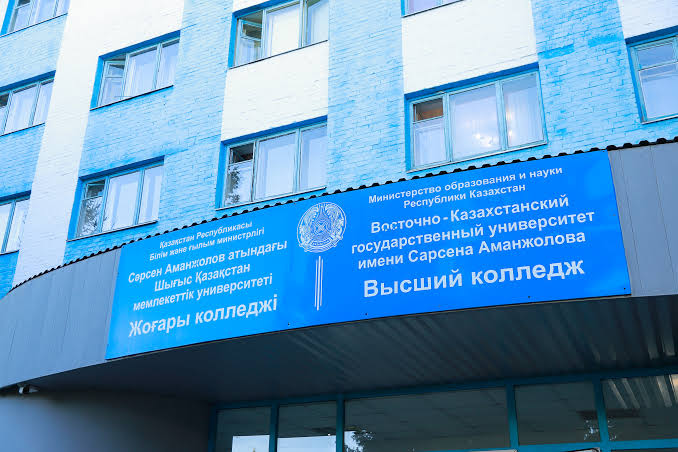
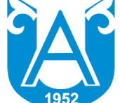

Өскеменде 13 бағдарлама: мұғалім, аудармашы, бухгалтер, заңгер, IT-техник және зертханашы. 9 немесе 11 сыныптан кейін келуге болады.
Мамандықтарды көруПрофориентацияҚабылдауЖоғары колледж – Сәрсен Аманжолов атындағы Шығыс Қазақстан университетінің құрамындағы білім беру бөлімшесі. Университет 1952 жылы Усть-Каменогорск педагогикалық институты ретінде құрылып, 2003 жылы қазақ тіл білімінің ғалымы Сәрсен Аманжоловтың есімін алды.
Колледжде гуманитарлық және техникалық мамандықтар бойынша күндізгі оқу жүргізіледі. Қолданбалы бакалавр түлектері университеттің экономика жоғары мектебінде қысқартылған мерзімде (2 жыл) оқуын жалғастырып, оқу ақысына жеңілдік ала алады.
Барлығы 13 бағдарлама, 5 бағыт, 2 оқыту тілі. Оқу мемлекеттік білім беру стандарттарына сай жүргізіледі.
Қай мамандық сәйкес? Профориентация тестінен өт
| Мамандық | Біліктілік | 9 сыныптан кейін | 11 сыныптан кейін | |
|---|---|---|---|---|
🧸 | Мектепке дейінгі оқыту және тәрбиелеу01120100 | Мектепке дейінгі тәрбие және оқыту ұйымының тәрбиешісі4S01120102 | 3 жыл 10 ай | 2 жыл 10 ай |
📚 | Бастауышта оқыту педагогикасы мен әдістемесі01140100 | Бастауыш сынып мұғалімі4S01140101 | 3 жыл 10 ай | 2 жыл 10 ай |
🎓 | Бастауышта оқыту педагогикасы мен әдістемесі01140100 | Қолданбалы бакалавр5AB01140101 | — | 2 жыл 10 ай |
⚽ | Дене шынықтыру және спорт01140500 | Дене шынықтыру мұғалімі4S01140501 | 3 жыл 10 ай | 2 жыл 10 ай |
🏅 | Дене шынықтыру және спорт01140200 | Дене шынықтыру қолданбалы бакалавры5AB01140201 | — | 2 жыл 10 ай |
✍️ | Базалық орта білімде тіл мен әдебиетті оқыту01140600 | Қазақ тілі мен әдебиеті мұғалімі4S01140601 | 3 жыл 10 ай | 2 жыл 10 ай |
📖 | Базалық орта білімде тіл мен әдебиетті оқыту01140600 | Орыс тілі мен әдебиеті мұғалімі4S01140602 | 3 жыл 10 ай | 2 жыл 10 ай |
🌍 | Базалық орта білімде тіл мен әдебиетті оқыту01140600 | Шетел тілі мұғалімі4S01140605 | 3 жыл 10 ай | 2 жыл 10 ай |
🗣️ | Аударма ісі (түрлері бойынша)02310100 | Аудармашы4S02310101 | 3 жыл 10 ай | 2 жыл 10 ай |
🧮 | Есеп және аудит04110100 | Бухгалтер4S04110102 | 3 жыл 10 ай | 2 жыл 10 ай |
⚖️ | Құқықтану04210100 | Заңгер4S04210101 | 3 жыл 10 ай | 2 жыл 10 ай |
💻 | Бағдарламалық қамтамасыз ету (түрлері бойынша)06130100 | Ақпараттық жүйелер техникі4S06130105 | 3 жыл 10 ай | 2 жыл 10 ай |
🧪 | Зертханалық технология07110400 | Химиялық талдау зертханашысы3W07110402 | нақтылаңыз | нақтылаңыз |
Колледжге 9 немесе 11 сыныптан кейін түсуге болады. Төменде қабылдаудың жалпы тәртібі берілген.
Оқу мерзімі әдетте 3 жыл 10 ай. 13 бағдарламаның қолданбалы бакалаврдан басқасына түсуге болады.
Оқу мерзімі әдетте 2 жыл 10 ай. Қолданбалы бакалавр бағдарламалары тек осы базада.
Қолданбалы бакалавр түлектері университеттің экономика жоғары мектебінде 2 жылда оқып, ақыға жеңілдік ала алады.
| Оқу түрі | Құжат қабылдау |
|---|---|
| Мемлекеттік тапсырыс, күндізгі | 25 маусым – 22 тамыз |
| Ақылы негіз | 25 маусым – 27 тамыз |
| Педагогикалық мамандықтар | 25 маусым – 10 тамыз |
| Кешкі және сырттай | 25 маусым – 20 қыркүйек |
Колледжде екі оқыту тілі бар: қазақ және орыс.
Өскемен қаласы, 30-шы Гвардиялық дивизия көшесі, 36. Картаны көру.
2024 жылғы мәлімет бойынша түлектердің 95%-ы жұмысқа орналасқан.
Бағасын мен таппадым. Қабылдау комиссиясынан сұраңыз: байланыс.
Колледж ғимаратының кіреберісі әйнекпен әрленген, мүмкіндігі шектеулі адамдарға арналған пандусы бар. Маңдайшада қазақша және орысша жазу бар.
Ғимарат айналасы көгалдандырылған, студенттерге демалуға ыңғайлы.
Мекенжайы: Өскемен қ., 30-шы Гвардиялық дивизия көшесі, 36.
Картадан көруБайланысКолледж студенттері университеттің мәдени және ғылыми іс-шараларына қатысады: «Студентке арналған салтанатты қабылдау», «Бірінші курс таланттары», «Студенттік көктем», «Мисс ВКГУ», би байқауы «Жұлдызды баттл».
Спорт секциялары: футбол, волейбол, бокс, шахмат, тоғызқұмалақ және басқалары. Студенттер қалалық, облыстық және республикалық байқауларға қатысады.
InstagramTelegramДүйсенбі–жұма: 8:00–18:00